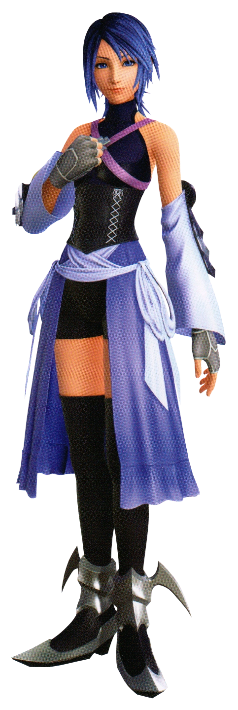
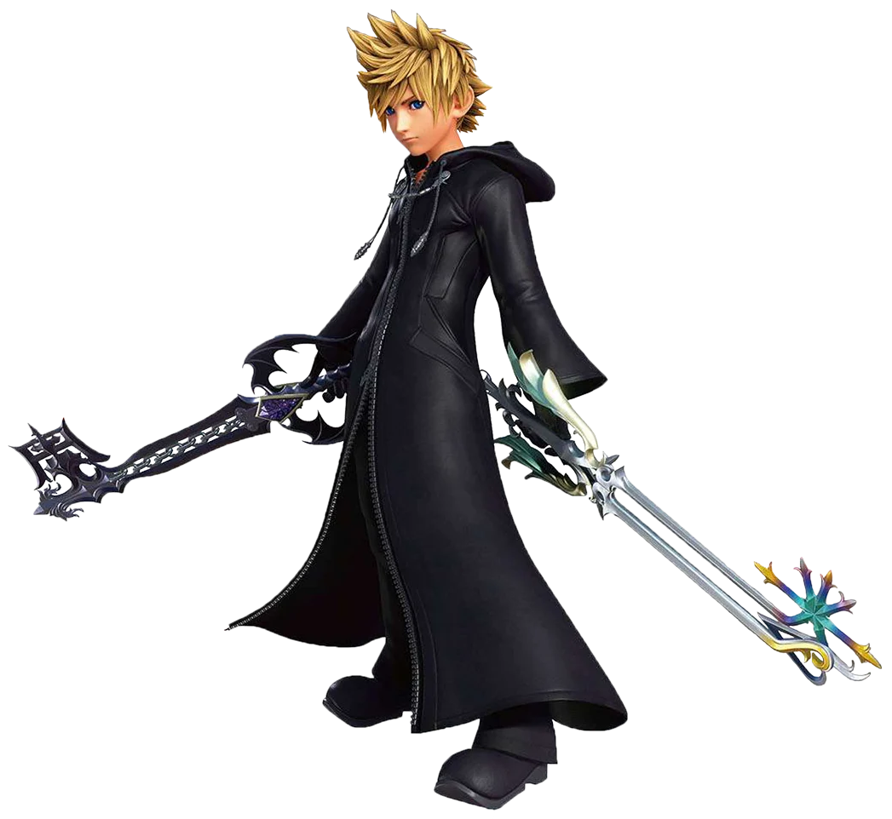
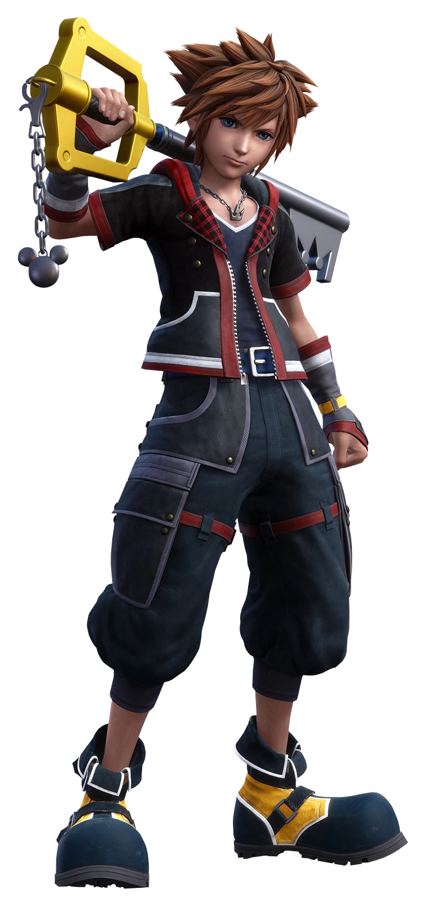
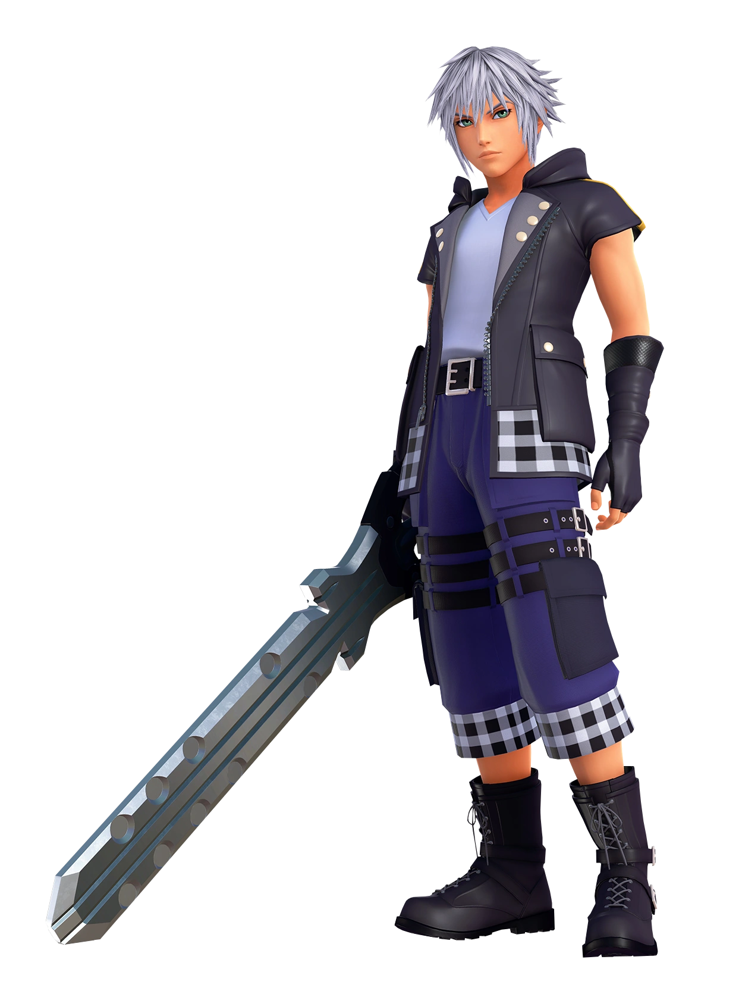
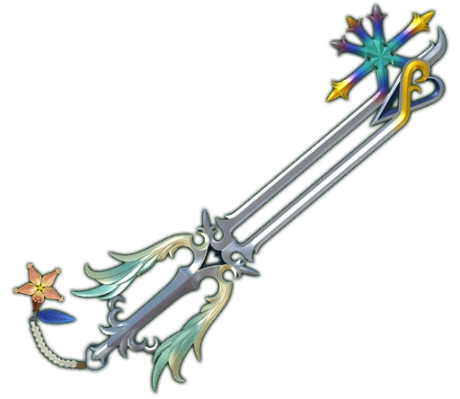
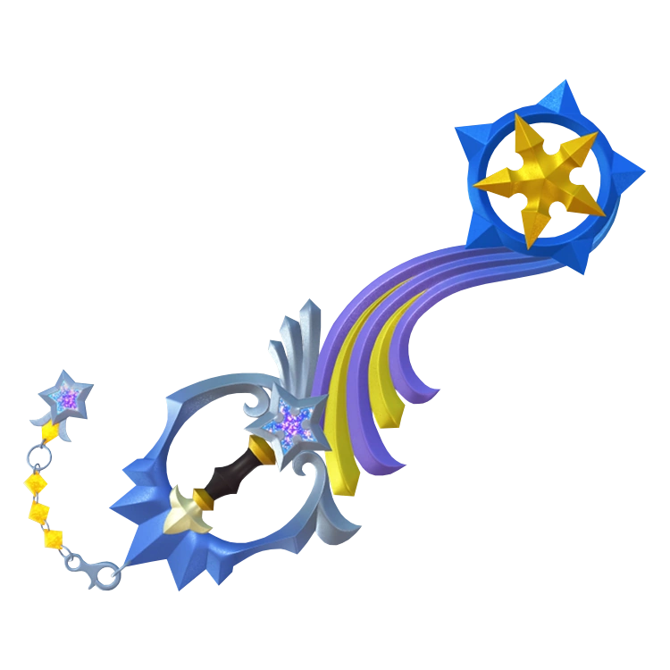

The Keyblade is a mgical weapon with a will of its own. Rather than belonging permanently to one person, the Keyblade chooses who is worthy to wield it and can even change allegiance under certain circumstances. A wielder can summon and dismiss their Keyblade at will, allowing it to appear instantly whenever it is needed. Although it is commonly used as a weapon, the Keyblade's true purpose extends far beyond combat, serving as a powerful tool capable of interacting with hearts, worlds, and magical locks.
Not everyone can wield a Keyblade. Most wielders recieve the ability through the Bequeathing Ceremony, a tradition in which a Keyblade Master passes on the potential to wield a Keyblade. However, recieving this potential does not gurantee that a Keyblade will appear. A person must also possess a strong heart, and ultimately, the Keyblade itself decides whether it willa ccept someone as its wielder. This combination of inheritance, inner strengthm and the Keyblade's own choice makes becoming a wielder a rare honor.




A Keyblade wielder is someone who has been chosen to use the Keyblade's power. Wielders come from many different backgrounds and often dedicate themselves to protecting others from the forces of darkness. Some wielders eventually become Keyblade Masters after completing years of training and proving their skill and wisdom. Keyblades are also closely connected to the balance between light and darkness, with different Keyblades and wielders playing important roles in maintaining that balance throughtout the series.



Although many Keyblades appear to be completely different weapons, most are actually different forms of the same Keyblade. By attaching a Keychain, a wielder can transform the Keyblade's appearance while also changing its abilities and strengths. Many Keychains are created from meaningful memories, friendships, or important events, making each one a symbol of the connections formed throughout the journey.